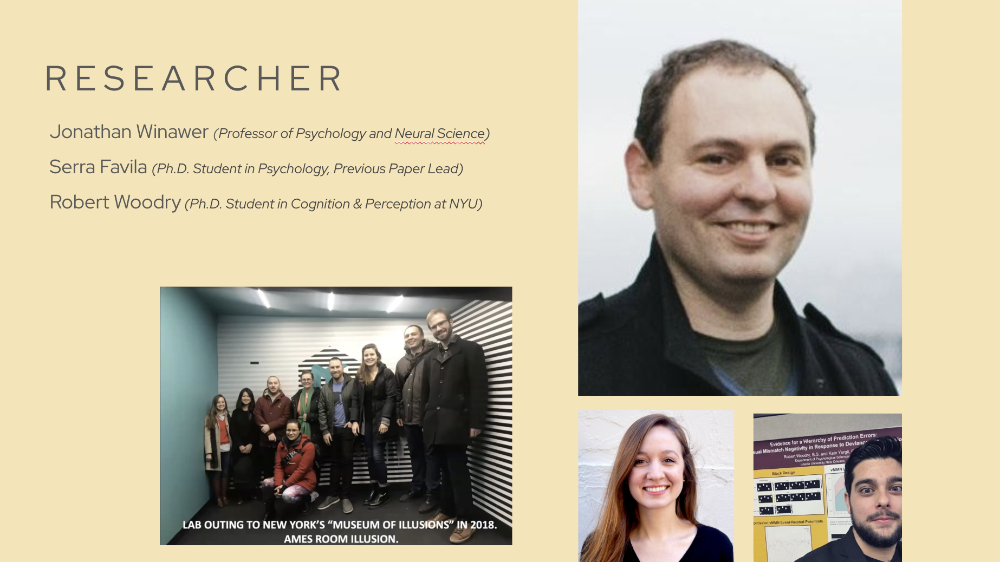
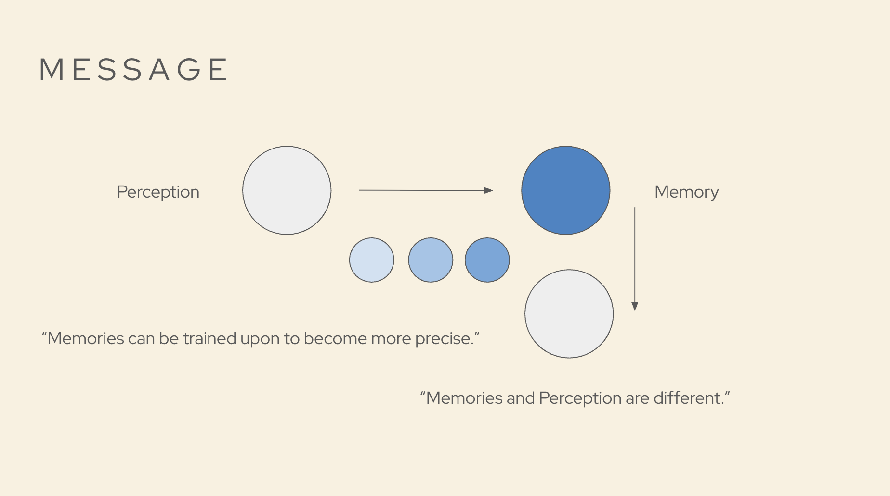
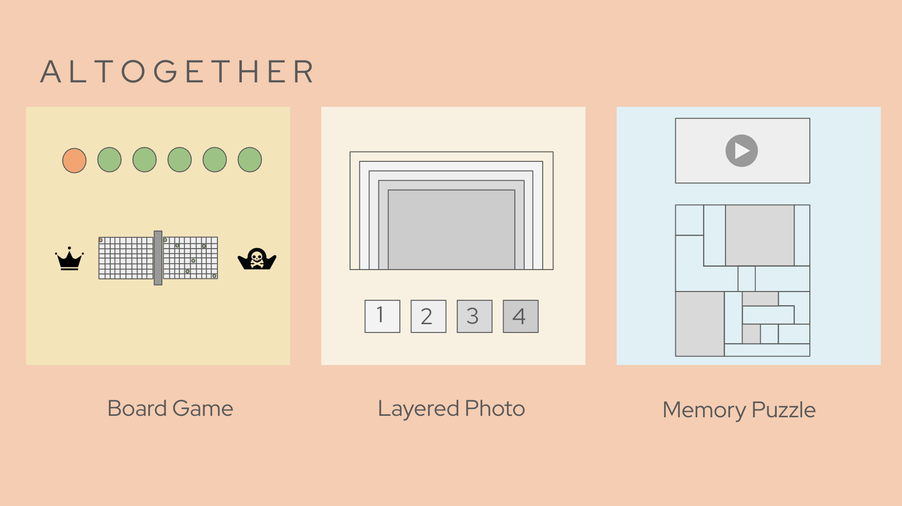
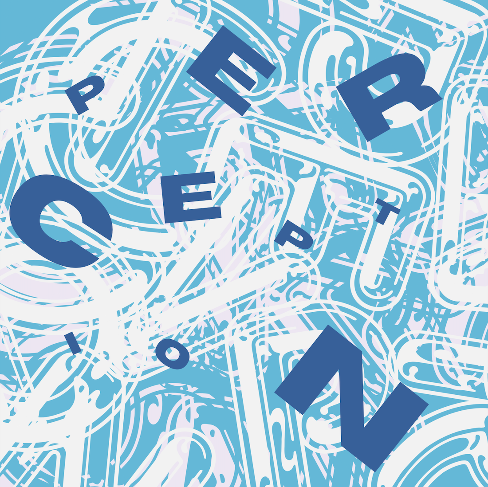
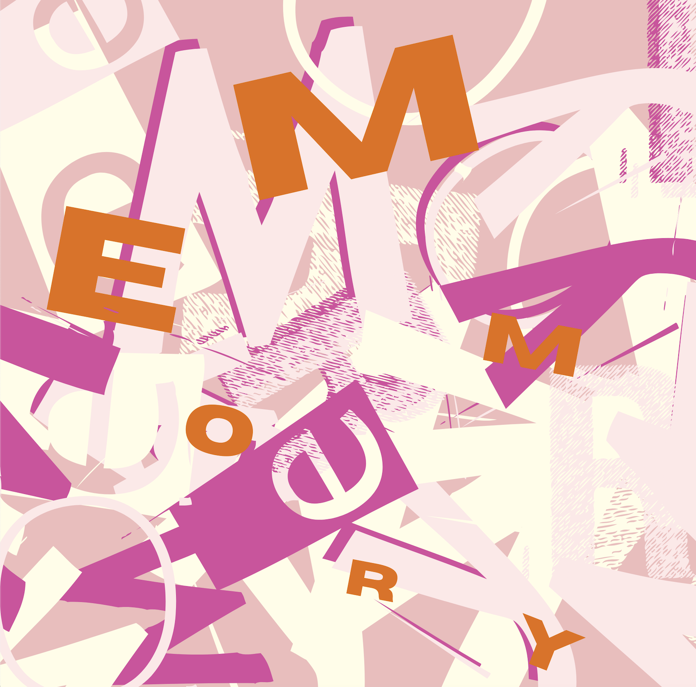

May 2, 2025
The topic we chose for our project for the class Playful Communications on Serious Research is related to perception and memory in neuroscience. Researchers Jonathon Winawer, Serra Favila, and Robert Woodry shared their findings on the different ways perception and memory are stored in the brain.
 Conceptual Package Slides →Here we established our audience, which is individuals interested in psychology and interactive learning, as understanding this topic could help individuals learn that repetitive learning helps retain information. Our message is that memories and perception are different in the way that memories can be trained upon to become more precise. In order to reach this, we decided to create something that allowed individuals to reconstruct a version of perception to demonstrate memory.
  Schematic Package →In this, we laid down the plan for creating the exhibit. We planned for each member's roles, material, fabrication, and prototyping. I created the puzzle designs, and in the process, I wanted to create an unpredictable design where users wouldn't be able to guess which piece goes next to each other, like in a regular puzzle. In addition, by designing them in squares, they couldn't try to fit them to each other, so they would have to watch the video to match the design.
 I also designed the website, where, after prototyping, users wanted a timer to keep track of how long it took them to accomplish each puzzle, also adding a layer of competitiveness to each other to beat each other's times. I also edited the videos of my partner assembling the puzzle. To establish memory, we started with a blurry view which slowly became clearer, and in perception, we started with a clear version that became blurrier. For memory, I also added a blackout screen to restrict users from putting the puzzle together while watching the video. I did this as when you reconstruct perception, you won't have the exact experience in front of you, instead, you have to put puzzles together bit by bit.
Video Website →We picked a thicker acrylic board as our choice of material for the boards. This added a layer of fun as the sound and weight of the pieces were satisfying. Overall, the exhibit was a success as individuals were able to struggle more on the memory section (longer times), which correlates with the research where individuals have to continuously recall perception as compared to perception, which is clear and in front of you now, hence, requiring less work.
Return to Classes →